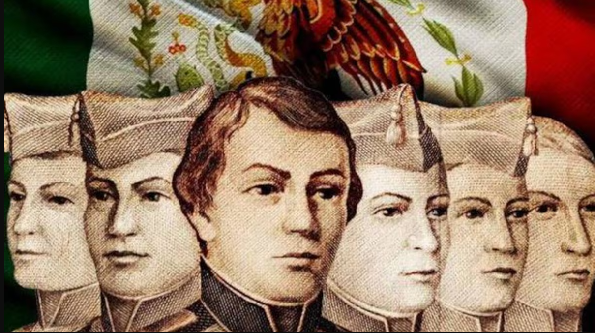

Fechas Importantes de Septiembre
13 de Septiembre
El Contexto Histórico (1847) Durante la Guerra de Intervención Estadounidense (1846-1848), las tropas invasoras avanzaron hacia la Ciudad de México. El Castillo de Chapultepec, que funcionaba como Heroico Colegio Militar, se convirtió en el último punto estratégico defensivo antes de tomar la capital. Los 6 Cadetes Reconocidos A pesar de la orden de evacuación, un grupo de cadetes decidió permanecer junto al general Nicolás Bravo y los soldados mexicanos para resistir el asalto. Los seis cadetes reconocidos históricamente son: Juan de la Barrera: Teniente de Ingenieros (20 años). Agustín Melgar: Cadete (18 años). Fernando Montes de Oca: Cadete (18 años). Vicente Suárez: Cadete (14 años). Francisco Márquez: Cadete (12 años). Juan Escutia: Cadete (20 años), a quien la tradición atribuye haberse envuelto en la bandera nacional para evitar que cayera en manos enemigas.
Defensa del Castillo de Chapultepec (Niños Héroes).

15 de Septiembre
Grito de Independencia de México.
El Contexto Histórico (1810) La conspiración insurgente organizada en Querétaro fue descubierta por las autoridades virreinales a mediados de septiembre. Ante el riesgo inminente de ser arrestados, la madrugada del 16 de septiembre el cura Miguel Hidalgo y Costilla, acompañado por Ignacio Allende y Juan Aldama, tocó las campanas de la parroquia de Dolores (Guanajuato) para convocar al pueblo a levantarse en armas contra el dominio español. La Celebración de la Noche del 15 de Septiembre.

16 de Septiembre
Inicio de la Guerra de Independencia.
Acontecimiento Histórico (1810) En la madrugada del 16 de septiembre de 1810, el cura Miguel Hidalgo y Costilla llamó a misa a los habitantes de Dolores (hoy Dolores Hidalgo, Guanajuato). Al reunir a los feligreses y peones, lanzó el grito de rebelión portando el estandarte de la Virgen de Guadalupe, iniciando un movimiento social y armado que duraría 11 años. Actividades del Día Feriado Desfile Militar: En la Ciudad de México se lleva a cabo el tradicional Desfile Militar en el Zócalo, donde las Fuerzas Armadas y la Guardia Nacional muestran sus contingentes ante el Presidente de la República. Descanso Obligatorio: Es un día de asueto oficial en todo el país (no hay labores escolares ni administrativas). Convivencia Familiar: Las familias mexicanas continúan los festejos iniciados la noche previa con comidas tradicionales.

27 de Septiembre
Consumación de la Independencia de México.
Tras más de una década de guerra, la independencia se logró mediante la negociación y la alianza política entre dos antiguos enemigos: Agustín de Iturbide (líder del ejército realista) y Vicente Guerrero (líder de la resistencia insurgente).
30 de Septiembre
Natalicio de José María Morelos y Pavón.
El 30 de septiembre se conmemora en México el Natalicio de José María Morelos y Pavón (1765-1815), uno de los máximos caudillos, estrategas militares e ideólogos del movimiento de Independencia.